CODING AGENTS AS PIXEL WORLD MODELS
traex/DeepSeek-V4.1-Flash · material_0043
点击播放 · 原生 RGB 像素
逐轮保存的候选
回放视频、检查图与代码变化。
每份候选均可单独播放。实际图片检查记录在下方工具轨迹中。
候选 01播放与检查图
点击播放 · 原生 RGB 像素

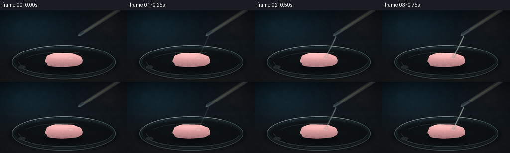
展开代码变化
--- 上一保存版本
+++ 本次保存版本
@@ -0,0 +1,457 @@
+from pathlib import Path
+import math
+
+import numpy as np
+from PIL import Image, ImageDraw, ImageFilter
+
+import artifact_io
+
+
+W, H = 256, 144
+SS = 4
+SW, SH = W * SS, H * SS
+FPS = 4.0
+NFRAMES = 20
+CASE_DIR = Path(__file__).resolve().parent
+
+
+def s(value):
+ return int(round(value * SS))
+
+
+def sp(points):
+ return [(s(x), s(y)) for x, y in points]
+
+
+def smoothstep(a, b, x):
+ t = max(0.0, min(1.0, (x - a) / (b - a)))
+ return t * t * (3.0 - 2.0 * t)
+
+
+def lerp(a, b, t):
+ return a + (b - a) * t
+
+
+def mix_color(a, b, t):
+ return tuple(int(round(lerp(x, y, t))) for x, y in zip(a, b))
+
+
+def composite(base, layer):
+ return Image.alpha_composite(base.convert("RGBA"), layer).convert("RGB")
+
+
+def soft_layer():
+ return Image.new("RGBA", (SW, SH), (0, 0, 0, 0))
+
+
+def make_background():
+ yy, xx = np.mgrid[0:SH, 0:SW].astype(np.float32)
+ u = xx / (SW - 1)
+ v = yy / (SH - 1)
+
+ top = np.array([9, 18, 25], dtype=np.float32)
+ bottom = np.array([23, 27, 30], dtype=np.float32)
+ img = top[None, None, :] * (1.0 - v[..., None]) + bottom[None, None, :] * v[..., None]
+
+ cool_glow = np.exp(-(((u - 0.20) / 0.30) ** 2 + ((v - 0.23) / 0.28) ** 2))
+ warm_glow = np.exp(-(((u - 0.87) / 0.23) ** 2 + ((v - 0.15) / 0.25) ** 2))
+ img += cool_glow[..., None] * np.array([7, 20, 24], dtype=np.float32)
+ img += warm_glow[..., None] * np.array([12, 7, 4], dtype=np.float32)
+
+ bench = np.clip((v - 0.43) / 0.57, 0, 1)
+ img += bench[..., None] * np.array([7, 6, 4], dtype=np.float32)
+ img += (np.exp(-((v - 0.45) / 0.025) ** 2) * 2.0)[..., None]
+
+ rng = np.random.default_rng(41)
+ coarse = rng.normal(0.0, 1.0, (SH // 16, SW // 16)).astype(np.float32)
+ coarse_img = Image.fromarray(np.uint8(np.clip(coarse * 24 + 128, 0, 255)))
+ coarse_img = coarse_img.resize((SW, SH), Image.Resampling.BICUBIC).filter(ImageFilter.GaussianBlur(s(1.0)))
+ coarse_arr = (np.asarray(coarse_img, dtype=np.float32) - 128.0) / 128.0
+ img += coarse_arr[..., None] * 4.5
+
+ img = np.clip(img, 0, 255).astype(np.uint8)
+ bg = Image.fromarray(img, "RGB")
+
+ bokeh = soft_layer()
+ d = ImageDraw.Draw(bokeh)
+ for x, y, r, color in [
+ (36, 29, 13, (40, 94, 101, 18)),
+ (62, 19, 8, (67, 114, 116, 12)),
+ (218, 34, 16, (110, 79, 55, 12)),
+ (239, 58, 8, (130, 92, 63, 10)),
+ (19, 55, 5, (55, 86, 89, 10)),
+ ]:
+ d.ellipse((s(x - r), s(y - r), s(x + r), s(y + r)), fill=color)
+ bokeh = bokeh.filter(ImageFilter.GaussianBlur(s(6.0)))
+ return composite(bg, bokeh)
+
+
+BACKGROUND = make_background()
+
+
+def gum_outline(cx, cy, rx, ry, reaction):
+ pts = []
+ count = 180
+ for i in range(count):
+ a = 2.0 * math.pi * i / count
+ c, q = math.cos(a), math.sin(a)
+ # A soft superellipse gives the gum a chewed, pillow-like silhouette.
+ ex = math.copysign(abs(c) ** 0.72, c)
+ ey = math.copysign(abs(q) ** 0.82, q)
+ wobble = 1.0 + 0.035 * math.sin(3 * a + 0.8) + 0.018 * math.sin(9 * a - 0.3)
+ notch = 1.0 - 0.045 * math.exp(-((a - 2.75) / 0.17) ** 2)
+ notch -= 0.032 * math.exp(-((a - 0.18) / 0.13) ** 2)
+ if reaction > 0:
+ ex += 0.035 * reaction * math.sin(5 * a + 0.7)
+ ey += 0.08 * reaction * math.sin(4 * a - 0.5)
+ pts.append((cx + rx * ex * wobble * notch, cy + ry * ey * wobble * notch))
+ return sp(pts)
+
+
+def make_gum(canvas, reaction, char):
+ rng = np.random.default_rng(1207)
+ cx, cy = 127.5, 100.5
+ rx, ry = 37.5 + 2.2 * reaction, 14.0 + 2.5 * reaction
+
+ shadow = soft_layer()
+ d = ImageDraw.Draw(shadow)
+ d.ellipse((s(cx - rx - 4), s(cy + 8), s(cx + rx + 4), s(cy + 23)), fill=(0, 0, 0, 105))
+ shadow = shadow.filter(ImageFilter.GaussianBlur(s(3.2)))
+ canvas = composite(canvas, shadow)
+
+ mask = Image.new("L", (SW, SH), 0)
+ md = ImageDraw.Draw(mask)
+ outline = gum_outline(cx, cy, rx, ry, reaction)
+ md.polygon(outline, fill=255)
+
+ yy, xx = np.mgrid[0:SH, 0:SW].astype(np.float32)
+ nx = (xx / SW - (cx - rx) / W) / max(0.001, (2 * rx) / W)
+ ny = (yy / SH - (cy - ry) / H) / max(0.001, (2 * ry) / H)
+ nx = np.clip(nx, 0, 1)
+ ny = np.clip(ny, 0, 1)
+
+ top_col = np.array([229, 186, 183], dtype=np.float32)
+ side_col = np.array([171, 126, 128], dtype=np.float32)
+ tex = top_col[None, None, :] * (1.0 - ny[..., None]) + side_col[None, None, :] * ny[..., None]
+ tex += (1.0 - np.abs(ny - 0.22))[..., None] * np.array([20, 9, 8], dtype=np.float32)
+
+ fine = rng.normal(0.0, 1.0, (SH // 4, SW // 4)).astype(np.float32)
+ fine_img = Image.fromarray(np.uint8(np.clip(fine * 24 + 128, 0, 255)))
+ fine_img = fine_img.resize((SW, SH), Image.Resampling.BICUBIC).filter(ImageFilter.GaussianBlur(s(0.35)))
+ fine_arr = (np.asarray(fine_img, dtype=np.float32) - 128.0) / 128.0
+ tex += fine_arr[..., None] * 8.0
+
+ tex = np.clip(tex, 0, 255).astype(np.uint8)
+ gum = Image.fromarray(tex, "RGB").convert("RGBA")
+ gum.putalpha(mask)
+ canvas = composite(canvas, gum)
+
+ detail = soft_layer()
+ d = ImageDraw.Draw(detail)
+
+ # Granular sugar-like texture and shallow chew marks.
+ for _ in range(95):
+ a = rng.uniform(0, 2 * math.pi)
+ r = math.sqrt(rng.uniform(0, 1))
+ x = cx + 0.78 * rx * r * math.cos(a)
+ y = cy + 0.70 * ry * r * math.sin(a)
+ radius = rng.uniform(0.18, 0.75)
+ alpha = int(rng.uniform(14, 42))
+ tone = (255, 232, 229, alpha) if rng.random() > 0.45 else (111, 77, 82, alpha)
+ d.ellipse((s(x - radius), s(y - radius), s(x + radius), s(y + radius)), fill=tone)
+
+ d.arc((s(cx - 24), s(cy - 8), s(cx - 2), s(cy + 6)), 205, 318, fill=(145, 103, 108, 55), width=s(0.7))
+ d.arc((s(cx + 6), s(cy - 7), s(cx + 27), s(cy + 7)), 220, 332, fill=(247, 218, 214, 65), width=s(0.55))
+
+ # Broad soft top light.
+ d.ellipse((s(cx - 27), s(cy - 11), s(cx + 20), s(cy - 2)), fill=(255, 226, 220, 25))
+ detail = detail.filter(ImageFilter.GaussianBlur(s(0.35)))
+ canvas = composite(canvas, detail)
+
+ # The acid leaves a wet, glossy contact patch before carbonization dominates.
+ wet = soft_layer()
+ d = ImageDraw.Draw(wet)
+ wet_r = 5.5 + 15.5 * reaction
+ wet_alpha = int(42 + 55 * reaction)
+ d.ellipse((s(142 - wet_r), s(97 - wet_r * 0.42), s(142 + wet_r), s(97 + wet_r * 0.55)),
+ fill=(226, 239, 220, wet_alpha))
+ d.arc((s(142 - wet_r * 0.75), s(97 - wet_r * 0.36), s(142 + wet_r * 0.6), s(97 + wet_r * 0.3)),
+ 190, 330, fill=(255, 255, 240, 110), width=s(0.65))
+ wet = wet.filter(ImageFilter.GaussianBlur(s(0.8)))
+ canvas = composite(canvas, wet)
+
+ if char > 0.01:
+ burn = soft_layer()
+ d = ImageDraw.Draw(burn)
+ for j, (dx, dy, rw, rh, alpha) in enumerate([
+ (0.0, 1.0, 13.0, 6.2, 165),
+ (-4.5, 2.0, 7.0, 4.0, 120),
+ (5.0, 1.0, 7.5, 4.2, 130),
+ (1.0, 3.8, 9.5, 3.0, 115),
+ ]):
+ rr = 0.38 + 0.62 * char
+ tone = mix_color((96, 65, 48), (22, 18, 16), char)
+ d.ellipse((s(142 + dx - rw * rr), s(100 + dy - rh * rr),
+ s(142 + dx + rw * rr), s(100 + dy + rh * rr)),
+ fill=(*tone, int(alpha * char)))
+ burn = burn.filter(ImageFilter.GaussianBlur(s(0.8)))
+ canvas = composite(canvas, burn)
+
+ return canvas
+
+
+def draw_foam(canvas, p, foam, char):
+ if foam <= 0.01:
+ return canvas
+
+ rng = np.random.default_rng(721)
+ layer = soft_layer()
+ d = ImageDraw.Draw(layer)
+
+ # A lumpy, rising reaction mass.
+ for j in range(18):
+ a = rng.uniform(0, 2 * math.pi)
+ rr = rng.uniform(0.15, 1.0)
+ x = 142.0 + math.cos(a) * (3.0 + 16.0 * foam) * rr
+ y = 100.0 + math.sin(a) * (2.0 + 7.5 * foam) * rr
+ rad = rng.uniform(2.5, 7.5) * (0.35 + 0.65 * foam)
+ tone = mix_color((226, 218, 193), (92, 82, 67), 0.35 * char)
+ d.ellipse((s(x - rad), s(y - rad * 0.68), s(x + rad), s(y + rad * 0.72)),
+ fill=(*tone, int(32 + 78 * foam)))
+
+ layer = layer.filter(ImageFilter.GaussianBlur(s(1.25)))
+ canvas = composite(canvas, layer)
+
+ # Bubbles are seeded once and emerge over time, so they do not flicker.
+ bubble_layer = soft_layer()
+ d = ImageDraw.Draw(bubble_layer)
+ for j in range(76):
+ birth = 0.15 + 0.72 * rng.random()
+ if p < birth:
+ continue
+ life = p - birth
+ a = rng.uniform(0, 2 * math.pi)
+ rr = math.sqrt(rng.uniform(0.05, 1.0))
+ x = 142.0 + math.cos(a) * (4.0 + 19.0 * foam) * rr
+ y = 100.0 + math.sin(a) * (2.0 + 8.8 * foam) * rr
+ base_r = rng.uniform(0.45, 2.3)
+ grow = min(1.0, 0.35 + life * 4.5)
+ pop = 1.0 if life < 0.15 else max(0.0, 1.0 - (life - 0.15) * 2.8)
+ radius = base_r * grow * (0.55 + 0.45 * pop)
+ if radius < 0.12:
+ continue
+ tone = (231, 224, 205, 135) if rng.random() > 0.22 else (178, 158, 128, 125)
+ d.ellipse((s(x - radius), s(y - radius * 0.78), s(x + radius), s(y + radius * 0.78)),
+ fill=(*tone[:3], int(tone[3] * foam)))
+ if radius > 0.75:
+ d.arc((s(x - radius), s(y - radius * 0.78), s(x + radius), s(y + radius * 0.78)),
+ 190, 330, fill=(255, 250, 228, int(130 * foam)), width=max(1, s(0.28)))
+ d.ellipse((s(x - radius * 0.42), s(y - radius * 0.52),
+ s(x - radius * 0.12), s(y - radius * 0.26)),
+ fill=(255, 255, 242, int(110 * foam)))
+ bubble_layer = bubble_layer.filter(ImageFilter.GaussianBlur(s(0.22)))
+ return composite(canvas, bubble_layer)
+
+
+def draw_vapor(canvas, p, vapor):
+ if vapor <= 0.01:
+ return canvas
+
+ layer = soft_layer()
+ d = ImageDraw.Draw(layer)
+ wisps = [
+ [(142, 95), (137, 86), (139, 77), (132, 67), (134, 57)],
+ [(147, 94), (151, 84), (147, 75), (153, 65), (149, 54)],
+ [(139, 94), (130, 88), (127, 79), (120, 73), (119, 64)],
+ [(146, 96), (157, 88), (158, 79), (166, 72), (164, 62)],
+ ]
+ for j, pts in enumerate(wisps):
+ phase = math.sin((p * 2.2 + j * 0.27) * math.pi)
+ shifted = []
+ for k, (x, y) in enumerate(pts):
+ fade = smoothstep(0.28, 0.70, p)
+ shifted.append((x + phase * (0.5 + k * 0.55), y - p * (1.0 + k * 0.7)))
+ alpha = int((16 + 24 * vapor) * fade)
+ d.line(sp(shifted), fill=(214, 222, 218, alpha), width=s(1.6 + 0.7 * vapor), joint="curve")
+ for k in range(1, len(shifted) - 1):
+ x, y = shifted[k]
+ rr = (2.0 + k * 0.65) * (0.35 + 0.65 * vapor)
+ d.ellipse((s(x - rr), s(y - rr * 0.7), s(x + rr), s(y + rr * 0.7)),
+ fill=(216, 224, 219, int(alpha * 0.50)))
+
+ layer = layer.filter(ImageFilter.GaussianBlur(s(2.3)))
+ # Add a second, wider haze pass for volume.
+ haze = layer.filter(ImageFilter.GaussianBlur(s(5.0)))
+ canvas = composite(canvas, haze)
+ return composite(canvas, layer)
+
+
+def draw_stream_and_pipette(canvas, p, stream, reaction):
+ # The pipette is a tilted glass tube entering from the upper right.
+ p0 = np.array([239.0, -2.0], dtype=np.float32)
+ p1 = np.array([159.5, 49.0], dtype=np.float32)
+ direction = (p1 - p0) / np.linalg.norm(p1 - p0)
+ normal = np.array([-direction[1], direction[0]], dtype=np.float32)
+ width = 4.0
+
+ glass = soft_layer()
+ d = ImageDraw.Draw(glass)
+ poly = [
+ p0 + normal * width,
+ p1 + normal * 3.2,
+ p1 - normal * 3.2,
+ p0 - normal * width,
+ ]
+ d.polygon(sp([tuple(q) for q in poly]), fill=(168, 199, 201, 52), outline=(199, 227, 228, 110))
+ d.line(sp([tuple(p0 - normal * 1.5), tuple(p1 - normal * 1.3)]),
+ fill=(229, 245, 240, 85), width=s(1.0))
+ d.line(sp([tuple(p0 + normal * 2.2), tuple(p1 + normal * 1.8)]),
+ fill=(73, 101, 106, 70), width=s(0.75))
+
+ # Pale acid remaining inside the tube.
+ fill_end = p0 + (p1 - p0) * (0.42 + 0.47 * (1.0 - p))
+ inner_poly = [
+ p0 + normal * 1.9,
+ fill_end + normal * 1.7,
+ fill_end - normal * 1.7,
+ p0 - normal * 1.9,
+ ]
+ d.polygon(sp([tuple(q) for q in inner_poly]), fill=(220, 223, 171, 72))
+ d.line(sp([tuple(p0 + normal * 0.8), tuple(fill_end + normal * 0.8)]),
+ fill=(255, 250, 201, 85), width=s(0.55))
+
+ # Tip and a dark rubber bulb just outside the frame.
+ tip = p1 + direction * 3.8
+ d.polygon(sp([tuple(p1 + normal * 2.2), tuple(p1 - normal * 2.2), tuple(tip)]),
+ fill=(183, 210, 211, 100), outline=(218, 236, 234, 125))
+ glass = glass.filter(ImageFilter.GaussianBlur(s(0.18)))
+ canvas = composite(canvas, glass)
+
+ if stream <= 0.01:
+ return canvas
+
+ stream_layer = soft_layer()
+ d = ImageDraw.Draw(stream_layer)
+ start = np.array([162.5, 52.0], dtype=np.float32)
+ end = np.array([142.0, 96.0], dtype=np.float32)
+ pts = []
+ for k in range(27):
+ t = k / 26.0
+ x = lerp(start[0], end[0], t) + math.sin(t * 5.1 + p * 4.0) * (0.22 + 0.35 * t)
+ y = lerp(start[1], end[1], t)
+ pts.append((x, y))
+
+ d.line(sp(pts), fill=(201, 231, 225, int(125 * stream)), width=s(2.1 + 0.5 * stream), joint="curve")
+ d.line(sp(pts), fill=(243, 250, 235, int(155 * stream)), width=s(0.85), joint="curve")
+
+ # Moving glints make the clear liquid legible against the dark set.
+ for j in range(5):
+ t = (p * 2.1 + j * 0.23) % 1.0
+ idx = min(len(pts) - 1, int(t * (len(pts) - 1)))
+ x, y = pts[idx]
+ d.ellipse((s(x - 0.7), s(y - 1.2), s(x + 0.7), s(y + 1.2)),
+ fill=(255, 255, 238, int(165 * stream)))
+
+ if reaction > 0.02:
+ impact = int(120 * reaction)
+ d.arc((s(137.0), s(94.0), s(147.0), s(100.0)), 198, 342,
+ fill=(245, 249, 226, impact), width=s(0.55))
+
+ stream_layer = stream_layer.filter(ImageFilter.GaussianBlur(s(0.22)))
+ canvas = composite(canvas, stream_layer)
+
+ bloom = stream_layer.filter(ImageFilter.GaussianBlur(s(2.0)))
+ return composite(canvas, bloom)
+
+
+def draw_dish(canvas):
+ # Rear glass and the broad contact shadow.
+ shadow = soft_layer()
+ d = ImageDraw.Draw(shadow)
+ d.ellipse((s(18), s(76), s(239), s(139)), fill=(0, 0, 0, 115))
+ shadow = shadow.filter(ImageFilter.GaussianBlur(s(4.0)))
+ canvas = composite(canvas, shadow)
+
+ back = soft_layer()
+ d = ImageDraw.Draw(back)
+ d.ellipse((s(24), s(70), s(232), s(139)), fill=(76, 117, 124, 34))
+ d.ellipse((s(30), s(77), s(226), s(130)), fill=(21, 34, 38, 50))
+ back = back.filter(ImageFilter.GaussianBlur(s(1.2)))
+ canvas = composite(canvas, back)
+
+ return canvas
+
+
+def draw_dish_rim(canvas):
+ layer = soft_layer()
+ d = ImageDraw.Draw(layer)
+ d.ellipse((s(24), s(70), s(232), s(139)), outline=(164, 203, 205, 108), width=s(1.55))
+ d.ellipse((s(28), s(73), s(228), s(135)), outline=(94, 139, 145, 74), width=s(0.8))
+ d.arc((s(24), s(70), s(232), s(139)), 190, 306, fill=(234, 249, 241, 150), width=s(1.35))
+ d.arc((s(31), s(77), s(225), s(131)), 8, 151, fill=(196, 232, 228, 94), width=s(1.1))
+ d.arc((s(44), s(84), s(213), s(126)), 205, 291, fill=(230, 247, 240, 72), width=s(0.7))
+ d.line(sp([(37, 104), (48, 118), (72, 127)]), fill=(244, 252, 246, 75), width=s(0.75), joint="curve")
+ d.ellipse((s(37), s(111), s(52), s(118)), fill=(224, 245, 239, 32))
+ layer = layer.filter(ImageFilter.GaussianBlur(s(0.28)))
+ return composite(canvas, layer)
+
+
+def add_finish(canvas, p):
+ arr = np.asarray(canvas, dtype=np.float32)
+
+ # Gentle bloom around the acid and bright foam.
+ bright = np.clip((arr - 178.0) / 77.0, 0, 1)
+ bright_img = Image.fromarray(np.uint8(bright * 255), "RGB")
+ bloom = bright_img.filter(ImageFilter.GaussianBlur(s(4.0)))
+ bloom_arr = np.asarray(bloom, dtype=np.float32) * 0.10
+ arr += bloom_arr
+
+ # Cinematic vignette and a restrained warm/cool color grade.
+ yy, xx = np.mgrid[0:SH, 0:SW].astype(np.float32)
+ nx = (xx / SW - 0.5) * 2.0
+ ny = (yy / SH - 0.5) * 2.0
+ vignette = np.clip(1.0 - 0.27 * (nx * nx * 0.75 + ny * ny), 0.58, 1.0)
+ arr *= vignette[..., None]
+ arr[..., 0] *= 1.018
+ arr[..., 2] *= 1.025
+ arr[..., 1] *= 1.005
+
+ # Fine, stable sensor grain.
+ rng = np.random.default_rng(900 + int(p * 1000))
+ grain = rng.normal(0.0, 2.4, (SH, SW, 1)).astype(np.float32)
+ arr += grain
+
+ arr = np.clip(arr, 0, 255).astype(np.uint8)
+ return Image.fromarray(arr, "RGB").resize((W, H), Image.Resampling.LANCZOS)
+
+
+def render_frame(index):
+ p = index / (NFRAMES - 1)
+ pour = smoothstep(0.015, 0.17, p)
+ reaction = smoothstep(0.13, 0.72, p)
+ foam = smoothstep(0.25, 0.78, p)
+ char = smoothstep(0.43, 0.96, p)
+ vapor = smoothstep(0.31, 0.88, p)
+
+ canvas = BACKGROUND.copy()
+ canvas = draw_dish(canvas)
+ canvas = make_gum(canvas, reaction, char)
+ canvas = draw_foam(canvas, p, foam, char)
+ canvas = draw_vapor(canvas, p, vapor)
+ canvas = draw_stream_and_pipette(canvas, p, pour, reaction)
+ canvas = draw_dish_rim(canvas)
+ return add_finish(canvas, p)
+
+
+def main():
+ frames = []
+ for i in range(NFRAMES):
+ frame = render_frame(i)
+ frames.append(np.asarray(frame, dtype=np.uint8))
+ print(f"rendered frame {i + 1:02d}/{NFRAMES}")
+ artifact_io.save(np.stack(frames), CASE_DIR)
+ print(f"saved {len(frames)} frames to {CASE_DIR}")
+
+
+if __name__ == "__main__":
+ main()
候选 02播放与检查图
点击播放 · 原生 RGB 像素

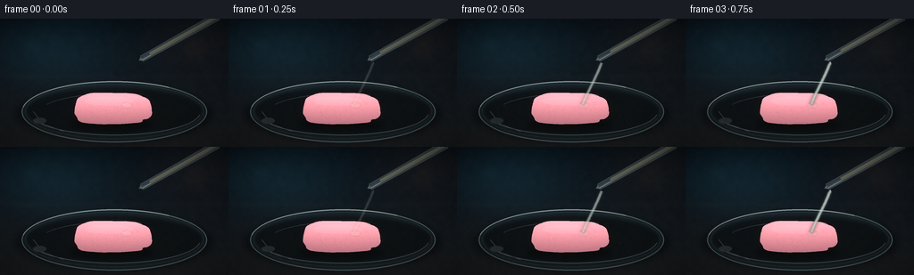
展开代码变化
--- 上一保存版本
+++ 本次保存版本
@@ -95,27 +95,27 @@
for i in range(count):
a = 2.0 * math.pi * i / count
c, q = math.cos(a), math.sin(a)
- # A soft superellipse gives the gum a chewed, pillow-like silhouette.
- ex = math.copysign(abs(c) ** 0.72, c)
- ey = math.copysign(abs(q) ** 0.82, q)
- wobble = 1.0 + 0.035 * math.sin(3 * a + 0.8) + 0.018 * math.sin(9 * a - 0.3)
- notch = 1.0 - 0.045 * math.exp(-((a - 2.75) / 0.17) ** 2)
- notch -= 0.032 * math.exp(-((a - 0.18) / 0.13) ** 2)
+ # A soft, irregular slab with a shallow bite on the upper-right edge.
+ ex = math.copysign(abs(c) ** 0.56, c)
+ ey = math.copysign(abs(q) ** 0.66, q)
+ wobble = 1.0 + 0.026 * math.sin(3 * a + 0.8) + 0.010 * math.sin(9 * a - 0.3)
+ notch = 1.0 - 0.075 * math.exp(-((a - 0.72) / 0.12) ** 2)
+ notch -= 0.026 * math.exp(-((a - 2.75) / 0.19) ** 2)
if reaction > 0:
- ex += 0.035 * reaction * math.sin(5 * a + 0.7)
- ey += 0.08 * reaction * math.sin(4 * a - 0.5)
+ ex += 0.030 * reaction * math.sin(5 * a + 0.7)
+ ey += 0.060 * reaction * math.sin(4 * a - 0.5)
pts.append((cx + rx * ex * wobble * notch, cy + ry * ey * wobble * notch))
return sp(pts)
def make_gum(canvas, reaction, char):
rng = np.random.default_rng(1207)
- cx, cy = 127.5, 100.5
- rx, ry = 37.5 + 2.2 * reaction, 14.0 + 2.5 * reaction
+ cx, cy = 126.0, 101.0
+ rx, ry = 43.0 + 2.0 * reaction, 17.5 + 2.3 * reaction
shadow = soft_layer()
d = ImageDraw.Draw(shadow)
- d.ellipse((s(cx - rx - 4), s(cy + 8), s(cx + rx + 4), s(cy + 23)), fill=(0, 0, 0, 105))
+ d.ellipse((s(cx - rx - 4), s(cy + 9), s(cx + rx + 4), s(cy + 25)), fill=(0, 0, 0, 100))
shadow = shadow.filter(ImageFilter.GaussianBlur(s(3.2)))
canvas = composite(canvas, shadow)
@@ -130,10 +130,10 @@
nx = np.clip(nx, 0, 1)
ny = np.clip(ny, 0, 1)
- top_col = np.array([229, 186, 183], dtype=np.float32)
- side_col = np.array([171, 126, 128], dtype=np.float32)
+ top_col = np.array([246, 186, 192], dtype=np.float32)
+ side_col = np.array([198, 129, 139], dtype=np.float32)
tex = top_col[None, None, :] * (1.0 - ny[..., None]) + side_col[None, None, :] * ny[..., None]
- tex += (1.0 - np.abs(ny - 0.22))[..., None] * np.array([20, 9, 8], dtype=np.float32)
+ tex += (1.0 - np.abs(ny - 0.18))[..., None] * np.array([24, 10, 11], dtype=np.float32)
fine = rng.normal(0.0, 1.0, (SH // 4, SW // 4)).astype(np.float32)
fine_img = Image.fromarray(np.uint8(np.clip(fine * 24 + 128, 0, 255)))
@@ -160,18 +160,18 @@
tone = (255, 232, 229, alpha) if rng.random() > 0.45 else (111, 77, 82, alpha)
d.ellipse((s(x - radius), s(y - radius), s(x + radius), s(y + radius)), fill=tone)
- d.arc((s(cx - 24), s(cy - 8), s(cx - 2), s(cy + 6)), 205, 318, fill=(145, 103, 108, 55), width=s(0.7))
- d.arc((s(cx + 6), s(cy - 7), s(cx + 27), s(cy + 7)), 220, 332, fill=(247, 218, 214, 65), width=s(0.55))
+ d.arc((s(cx - 28), s(cy - 10), s(cx - 2), s(cy + 8)), 205, 318, fill=(158, 101, 112, 48), width=s(0.7))
+ d.arc((s(cx + 8), s(cy - 9), s(cx + 32), s(cy + 9)), 220, 332, fill=(255, 220, 224, 60), width=s(0.55))
# Broad soft top light.
- d.ellipse((s(cx - 27), s(cy - 11), s(cx + 20), s(cy - 2)), fill=(255, 226, 220, 25))
+ d.ellipse((s(cx - 32), s(cy - 14), s(cx + 24), s(cy - 3)), fill=(255, 232, 231, 31))
detail = detail.filter(ImageFilter.GaussianBlur(s(0.35)))
canvas = composite(canvas, detail)
# The acid leaves a wet, glossy contact patch before carbonization dominates.
wet = soft_layer()
d = ImageDraw.Draw(wet)
- wet_r = 5.5 + 15.5 * reaction
+ wet_r = 6.0 + 17.0 * reaction
wet_alpha = int(42 + 55 * reaction)
d.ellipse((s(142 - wet_r), s(97 - wet_r * 0.42), s(142 + wet_r), s(97 + wet_r * 0.55)),
fill=(226, 239, 220, wet_alpha))
@@ -184,10 +184,10 @@
burn = soft_layer()
d = ImageDraw.Draw(burn)
for j, (dx, dy, rw, rh, alpha) in enumerate([
- (0.0, 1.0, 13.0, 6.2, 165),
- (-4.5, 2.0, 7.0, 4.0, 120),
- (5.0, 1.0, 7.5, 4.2, 130),
- (1.0, 3.8, 9.5, 3.0, 115),
+ (0.0, 1.0, 15.0, 7.0, 170),
+ (-5.0, 2.0, 8.0, 4.5, 125),
+ (5.5, 1.0, 8.5, 4.7, 135),
+ (1.0, 4.0, 10.5, 3.4, 120),
]):
rr = 0.38 + 0.62 * char
tone = mix_color((96, 65, 48), (22, 18, 16), char)
@@ -209,15 +209,15 @@
d = ImageDraw.Draw(layer)
# A lumpy, rising reaction mass.
- for j in range(18):
+ for j in range(26):
a = rng.uniform(0, 2 * math.pi)
rr = rng.uniform(0.15, 1.0)
- x = 142.0 + math.cos(a) * (3.0 + 16.0 * foam) * rr
- y = 100.0 + math.sin(a) * (2.0 + 7.5 * foam) * rr
- rad = rng.uniform(2.5, 7.5) * (0.35 + 0.65 * foam)
- tone = mix_color((226, 218, 193), (92, 82, 67), 0.35 * char)
+ x = 141.0 + math.cos(a) * (3.0 + 19.0 * foam) * rr
+ y = 100.0 + math.sin(a) * (2.0 + 9.0 * foam) * rr
+ rad = rng.uniform(2.8, 8.2) * (0.35 + 0.65 * foam)
+ tone = mix_color((241, 230, 202), (104, 88, 67), 0.30 * char)
d.ellipse((s(x - rad), s(y - rad * 0.68), s(x + rad), s(y + rad * 0.72)),
- fill=(*tone, int(32 + 78 * foam)))
+ fill=(*tone, int(40 + 92 * foam)))
layer = layer.filter(ImageFilter.GaussianBlur(s(1.25)))
canvas = composite(canvas, layer)
@@ -232,20 +232,20 @@
life = p - birth
a = rng.uniform(0, 2 * math.pi)
rr = math.sqrt(rng.uniform(0.05, 1.0))
- x = 142.0 + math.cos(a) * (4.0 + 19.0 * foam) * rr
- y = 100.0 + math.sin(a) * (2.0 + 8.8 * foam) * rr
+ x = 141.0 + math.cos(a) * (4.0 + 22.0 * foam) * rr
+ y = 100.0 + math.sin(a) * (2.0 + 10.0 * foam) * rr
base_r = rng.uniform(0.45, 2.3)
grow = min(1.0, 0.35 + life * 4.5)
pop = 1.0 if life < 0.15 else max(0.0, 1.0 - (life - 0.15) * 2.8)
radius = base_r * grow * (0.55 + 0.45 * pop)
if radius < 0.12:
continue
- tone = (231, 224, 205, 135) if rng.random() > 0.22 else (178, 158, 128, 125)
+ tone = (244, 237, 215, 170) if rng.random() > 0.22 else (190, 169, 137, 150)
d.ellipse((s(x - radius), s(y - radius * 0.78), s(x + radius), s(y + radius * 0.78)),
fill=(*tone[:3], int(tone[3] * foam)))
if radius > 0.75:
d.arc((s(x - radius), s(y - radius * 0.78), s(x + radius), s(y + radius * 0.78)),
- 190, 330, fill=(255, 250, 228, int(130 * foam)), width=max(1, s(0.28)))
+ 190, 330, fill=(255, 252, 231, int(165 * foam)), width=max(1, s(0.28)))
d.ellipse((s(x - radius * 0.42), s(y - radius * 0.52),
s(x - radius * 0.12), s(y - radius * 0.26)),
fill=(255, 255, 242, int(110 * foam)))
@@ -288,37 +288,37 @@
def draw_stream_and_pipette(canvas, p, stream, reaction):
# The pipette is a tilted glass tube entering from the upper right.
- p0 = np.array([239.0, -2.0], dtype=np.float32)
- p1 = np.array([159.5, 49.0], dtype=np.float32)
+ p0 = np.array([244.0, -3.0], dtype=np.float32)
+ p1 = np.array([158.5, 45.0], dtype=np.float32)
direction = (p1 - p0) / np.linalg.norm(p1 - p0)
normal = np.array([-direction[1], direction[0]], dtype=np.float32)
- width = 4.0
+ width = 4.8
glass = soft_layer()
d = ImageDraw.Draw(glass)
poly = [
p0 + normal * width,
- p1 + normal * 3.2,
- p1 - normal * 3.2,
+ p1 + normal * 3.8,
+ p1 - normal * 3.8,
p0 - normal * width,
]
- d.polygon(sp([tuple(q) for q in poly]), fill=(168, 199, 201, 52), outline=(199, 227, 228, 110))
+ d.polygon(sp([tuple(q) for q in poly]), fill=(168, 199, 201, 64), outline=(205, 232, 231, 145))
d.line(sp([tuple(p0 - normal * 1.5), tuple(p1 - normal * 1.3)]),
- fill=(229, 245, 240, 85), width=s(1.0))
+ fill=(238, 250, 244, 120), width=s(1.2))
d.line(sp([tuple(p0 + normal * 2.2), tuple(p1 + normal * 1.8)]),
- fill=(73, 101, 106, 70), width=s(0.75))
+ fill=(73, 101, 106, 92), width=s(0.9))
# Pale acid remaining inside the tube.
fill_end = p0 + (p1 - p0) * (0.42 + 0.47 * (1.0 - p))
inner_poly = [
p0 + normal * 1.9,
- fill_end + normal * 1.7,
- fill_end - normal * 1.7,
+ fill_end + normal * 2.0,
+ fill_end - normal * 2.0,
p0 - normal * 1.9,
]
- d.polygon(sp([tuple(q) for q in inner_poly]), fill=(220, 223, 171, 72))
+ d.polygon(sp([tuple(q) for q in inner_poly]), fill=(226, 226, 175, 95))
d.line(sp([tuple(p0 + normal * 0.8), tuple(fill_end + normal * 0.8)]),
- fill=(255, 250, 201, 85), width=s(0.55))
+ fill=(255, 252, 207, 110), width=s(0.7))
# Tip and a dark rubber bulb just outside the frame.
tip = p1 + direction * 3.8
@@ -332,8 +332,8 @@
stream_layer = soft_layer()
d = ImageDraw.Draw(stream_layer)
- start = np.array([162.5, 52.0], dtype=np.float32)
- end = np.array([142.0, 96.0], dtype=np.float32)
+ start = np.array([162.0, 49.5], dtype=np.float32)
+ end = np.array([141.0, 96.0], dtype=np.float32)
pts = []
for k in range(27):
t = k / 26.0
@@ -341,20 +341,20 @@
y = lerp(start[1], end[1], t)
pts.append((x, y))
- d.line(sp(pts), fill=(201, 231, 225, int(125 * stream)), width=s(2.1 + 0.5 * stream), joint="curve")
- d.line(sp(pts), fill=(243, 250, 235, int(155 * stream)), width=s(0.85), joint="curve")
+ d.line(sp(pts), fill=(194, 228, 221, int(185 * stream)), width=s(2.8 + 0.6 * stream), joint="curve")
+ d.line(sp(pts), fill=(247, 253, 237, int(220 * stream)), width=s(1.25), joint="curve")
# Moving glints make the clear liquid legible against the dark set.
for j in range(5):
t = (p * 2.1 + j * 0.23) % 1.0
idx = min(len(pts) - 1, int(t * (len(pts) - 1)))
x, y = pts[idx]
- d.ellipse((s(x - 0.7), s(y - 1.2), s(x + 0.7), s(y + 1.2)),
- fill=(255, 255, 238, int(165 * stream)))
+ d.ellipse((s(x - 0.9), s(y - 1.5), s(x + 0.9), s(y + 1.5)),
+ fill=(255, 255, 238, int(210 * stream)))
if reaction > 0.02:
- impact = int(120 * reaction)
- d.arc((s(137.0), s(94.0), s(147.0), s(100.0)), 198, 342,
+ impact = int(145 * reaction)
+ d.arc((s(136.0), s(93.5), s(147.0), s(100.0)), 198, 342,
fill=(245, 249, 226, impact), width=s(0.55))
stream_layer = stream_layer.filter(ImageFilter.GaussianBlur(s(0.22)))
候选 03播放与检查图
点击播放 · 原生 RGB 像素
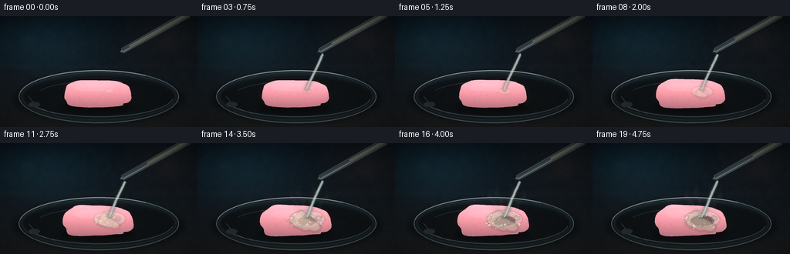
展开代码变化
--- 上一保存版本
+++ 本次保存版本
@@ -49,8 +49,8 @@
u = xx / (SW - 1)
v = yy / (SH - 1)
- top = np.array([9, 18, 25], dtype=np.float32)
- bottom = np.array([23, 27, 30], dtype=np.float32)
+ top = np.array([12, 22, 28], dtype=np.float32)
+ bottom = np.array([31, 34, 35], dtype=np.float32)
img = top[None, None, :] * (1.0 - v[..., None]) + bottom[None, None, :] * v[..., None]
cool_glow = np.exp(-(((u - 0.20) / 0.30) ** 2 + ((v - 0.23) / 0.28) ** 2))
@@ -60,14 +60,14 @@
bench = np.clip((v - 0.43) / 0.57, 0, 1)
img += bench[..., None] * np.array([7, 6, 4], dtype=np.float32)
- img += (np.exp(-((v - 0.45) / 0.025) ** 2) * 2.0)[..., None]
+ img += (np.exp(-((v - 0.45) / 0.025) ** 2) * 3.0)[..., None]
rng = np.random.default_rng(41)
coarse = rng.normal(0.0, 1.0, (SH // 16, SW // 16)).astype(np.float32)
coarse_img = Image.fromarray(np.uint8(np.clip(coarse * 24 + 128, 0, 255)))
coarse_img = coarse_img.resize((SW, SH), Image.Resampling.BICUBIC).filter(ImageFilter.GaussianBlur(s(1.0)))
coarse_arr = (np.asarray(coarse_img, dtype=np.float32) - 128.0) / 128.0
- img += coarse_arr[..., None] * 4.5
+ img += coarse_arr[..., None] * 5.5
img = np.clip(img, 0, 255).astype(np.uint8)
bg = Image.fromarray(img, "RGB")
@@ -95,15 +95,15 @@
for i in range(count):
a = 2.0 * math.pi * i / count
c, q = math.cos(a), math.sin(a)
- # A soft, irregular slab with a shallow bite on the upper-right edge.
- ex = math.copysign(abs(c) ** 0.56, c)
- ey = math.copysign(abs(q) ** 0.66, q)
- wobble = 1.0 + 0.026 * math.sin(3 * a + 0.8) + 0.010 * math.sin(9 * a - 0.3)
- notch = 1.0 - 0.075 * math.exp(-((a - 0.72) / 0.12) ** 2)
- notch -= 0.026 * math.exp(-((a - 2.75) / 0.19) ** 2)
+ # A pressed, irregular stick with softly rounded ends.
+ ex = math.copysign(abs(c) ** 0.40, c)
+ ey = math.copysign(abs(q) ** 0.58, q)
+ wobble = 1.0 + 0.024 * math.sin(3 * a + 0.8) + 0.009 * math.sin(9 * a - 0.3)
+ notch = 1.0 - 0.055 * math.exp(-((a - 0.62) / 0.10) ** 2)
+ notch -= 0.018 * math.exp(-((a - 2.75) / 0.19) ** 2)
if reaction > 0:
- ex += 0.030 * reaction * math.sin(5 * a + 0.7)
- ey += 0.060 * reaction * math.sin(4 * a - 0.5)
+ ex += 0.024 * reaction * math.sin(5 * a + 0.7)
+ ey += 0.048 * reaction * math.sin(4 * a - 0.5)
pts.append((cx + rx * ex * wobble * notch, cy + ry * ey * wobble * notch))
return sp(pts)
@@ -111,7 +111,7 @@
def make_gum(canvas, reaction, char):
rng = np.random.default_rng(1207)
cx, cy = 126.0, 101.0
- rx, ry = 43.0 + 2.0 * reaction, 17.5 + 2.3 * reaction
+ rx, ry = 47.0 + 2.0 * reaction, 15.2 + 2.1 * reaction
shadow = soft_layer()
d = ImageDraw.Draw(shadow)
@@ -130,8 +130,8 @@
nx = np.clip(nx, 0, 1)
ny = np.clip(ny, 0, 1)
- top_col = np.array([246, 186, 192], dtype=np.float32)
- side_col = np.array([198, 129, 139], dtype=np.float32)
+ top_col = np.array([249, 180, 190], dtype=np.float32)
+ side_col = np.array([202, 119, 134], dtype=np.float32)
tex = top_col[None, None, :] * (1.0 - ny[..., None]) + side_col[None, None, :] * ny[..., None]
tex += (1.0 - np.abs(ny - 0.18))[..., None] * np.array([24, 10, 11], dtype=np.float32)
@@ -150,21 +150,23 @@
d = ImageDraw.Draw(detail)
# Granular sugar-like texture and shallow chew marks.
- for _ in range(95):
+ for _ in range(120):
a = rng.uniform(0, 2 * math.pi)
r = math.sqrt(rng.uniform(0, 1))
x = cx + 0.78 * rx * r * math.cos(a)
y = cy + 0.70 * ry * r * math.sin(a)
- radius = rng.uniform(0.18, 0.75)
- alpha = int(rng.uniform(14, 42))
+ radius = rng.uniform(0.18, 0.62)
+ alpha = int(rng.uniform(10, 32))
tone = (255, 232, 229, alpha) if rng.random() > 0.45 else (111, 77, 82, alpha)
d.ellipse((s(x - radius), s(y - radius), s(x + radius), s(y + radius)), fill=tone)
- d.arc((s(cx - 28), s(cy - 10), s(cx - 2), s(cy + 8)), 205, 318, fill=(158, 101, 112, 48), width=s(0.7))
- d.arc((s(cx + 8), s(cy - 9), s(cx + 32), s(cy + 9)), 220, 332, fill=(255, 220, 224, 60), width=s(0.55))
+ d.arc((s(cx - 33), s(cy - 8), s(cx - 3), s(cy + 8)), 205, 318, fill=(158, 91, 107, 54), width=s(0.7))
+ d.arc((s(cx + 8), s(cy - 7), s(cx + 35), s(cy + 8)), 220, 332, fill=(255, 220, 224, 67), width=s(0.55))
+ d.line(sp([(cx - 18, cy - 5), (cx - 10, cy - 7), (cx - 3, cy - 6)]),
+ fill=(255, 231, 228, 48), width=s(0.55), joint="curve")
# Broad soft top light.
- d.ellipse((s(cx - 32), s(cy - 14), s(cx + 24), s(cy - 3)), fill=(255, 232, 231, 31))
+ d.ellipse((s(cx - 38), s(cy - 12), s(cx + 27), s(cy - 2)), fill=(255, 232, 231, 35))
detail = detail.filter(ImageFilter.GaussianBlur(s(0.35)))
canvas = composite(canvas, detail)
候选 04播放与检查图
候选 05播放与检查图
点击播放 · 原生 RGB 像素
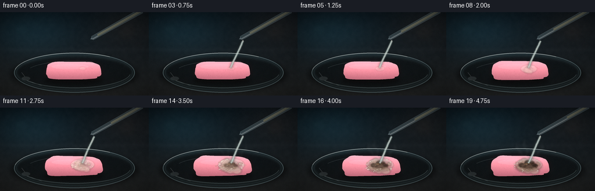
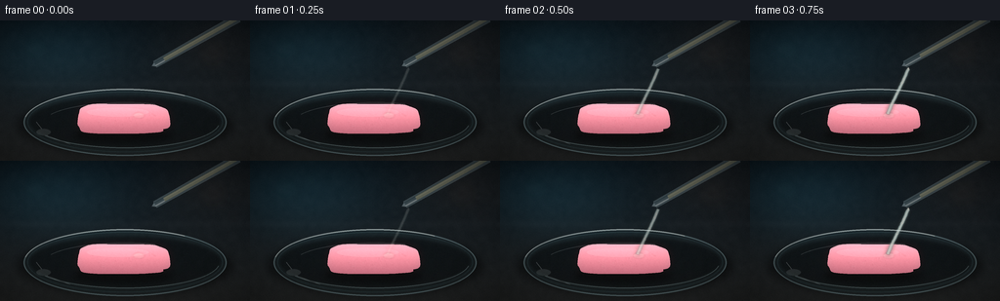
展开代码变化
--- 上一保存版本
+++ 本次保存版本
@@ -255,6 +255,46 @@
return composite(canvas, bubble_layer)
+def draw_char_crust(canvas, char):
+ if char <= 0.02:
+ return canvas
+
+ rng = np.random.default_rng(490)
+ crust = soft_layer()
+ d = ImageDraw.Draw(crust)
+
+ # A brown reaction halo underneath the tarry center.
+ halo = 8.0 + 15.0 * char
+ d.ellipse((s(141 - halo), s(100 - halo * 0.42),
+ s(141 + halo), s(100 + halo * 0.48)),
+ fill=(93, 50, 24, int(88 * char)))
+ crust = crust.filter(ImageFilter.GaussianBlur(s(2.0)))
+ canvas = composite(canvas, crust)
+
+ core = soft_layer()
+ d = ImageDraw.Draw(core)
+ for _ in range(25):
+ a = rng.uniform(0, 2 * math.pi)
+ rr = math.sqrt(rng.uniform(0.0, 1.0))
+ x = 141.0 + math.cos(a) * (3.0 + 10.5 * char) * rr
+ y = 99.5 + math.sin(a) * (1.5 + 4.4 * char) * rr
+ rw = rng.uniform(2.0, 5.2) * (0.35 + 0.65 * char)
+ rh = rw * rng.uniform(0.45, 0.78)
+ tone = mix_color((72, 42, 22), (12, 12, 11), rng.uniform(0.30, 1.0) * char)
+ d.ellipse((s(x - rw), s(y - rh), s(x + rw), s(y + rh)),
+ fill=(*tone, int(rng.uniform(100, 175) * char)))
+ core = core.filter(ImageFilter.GaussianBlur(s(0.65)))
+ canvas = composite(canvas, core)
+
+ sheen = soft_layer()
+ d = ImageDraw.Draw(sheen)
+ d.arc((s(134), s(96), s(147), s(103)), 198, 323,
+ fill=(238, 177, 103, int(95 * char)), width=s(0.65))
+ d.ellipse((s(137), s(97), s(140), s(98.5)),
+ fill=(255, 214, 151, int(78 * char)))
+ return composite(canvas, sheen)
+
+
def draw_vapor(canvas, p, vapor):
if vapor <= 0.01:
return canvas
@@ -439,6 +479,7 @@
canvas = draw_dish(canvas)
canvas = make_gum(canvas, reaction, char)
canvas = draw_foam(canvas, p, foam, char)
+ canvas = draw_char_crust(canvas, char)
canvas = draw_vapor(canvas, p, vapor)
canvas = draw_stream_and_pipette(canvas, p, pour, reaction)
canvas = draw_dish_rim(canvas)
候选 06播放与检查图
点击播放 · 原生 RGB 像素

展开代码变化
--- 上一保存版本
+++ 本次保存版本
@@ -96,8 +96,8 @@
a = 2.0 * math.pi * i / count
c, q = math.cos(a), math.sin(a)
# A pressed, irregular stick with softly rounded ends.
- ex = math.copysign(abs(c) ** 0.40, c)
- ey = math.copysign(abs(q) ** 0.58, q)
+ ex = math.copysign(abs(c) ** 0.38, c)
+ ey = math.copysign(abs(q) ** 0.54, q)
wobble = 1.0 + 0.024 * math.sin(3 * a + 0.8) + 0.009 * math.sin(9 * a - 0.3)
notch = 1.0 - 0.055 * math.exp(-((a - 0.62) / 0.10) ** 2)
notch -= 0.018 * math.exp(-((a - 2.75) / 0.19) ** 2)
@@ -111,7 +111,7 @@
def make_gum(canvas, reaction, char):
rng = np.random.default_rng(1207)
cx, cy = 126.0, 101.0
- rx, ry = 47.0 + 2.0 * reaction, 15.2 + 2.1 * reaction
+ rx, ry = 49.0 + 2.0 * reaction, 15.0 + 2.1 * reaction
shadow = soft_layer()
d = ImageDraw.Draw(shadow)
@@ -454,9 +454,9 @@
ny = (yy / SH - 0.5) * 2.0
vignette = np.clip(1.0 - 0.27 * (nx * nx * 0.75 + ny * ny), 0.58, 1.0)
arr *= vignette[..., None]
- arr[..., 0] *= 1.018
- arr[..., 2] *= 1.025
- arr[..., 1] *= 1.005
+ arr[..., 0] *= 1.025
+ arr[..., 2] *= 1.012
+ arr[..., 1] *= 1.008
# Fine, stable sensor grain.
rng = np.random.default_rng(900 + int(p * 1000))
候选 07播放与检查图
候选 08播放与检查图
点击播放 · 原生 RGB 像素

展开代码变化
--- 上一保存版本
+++ 本次保存版本
@@ -295,6 +295,45 @@
return composite(canvas, sheen)
+def draw_eruption(canvas, p, reaction):
+ """The late, frothy fizz column that makes the violent reaction unmistakable."""
+ if reaction <= 0.20:
+ return canvas
+
+ rng = np.random.default_rng(313)
+ cloud = soft_layer()
+ d = ImageDraw.Draw(cloud)
+ for j in range(24):
+ a = rng.uniform(0, 2 * math.pi)
+ rr = math.sqrt(rng.uniform(0.0, 1.0))
+ x = 141.0 + math.cos(a) * (3.5 + 10.0 * reaction) * rr
+ y = 97.0 - reaction * 7.5 + math.sin(a) * (2.0 + 5.0 * reaction) * rr
+ radius = rng.uniform(2.0, 5.7) * (0.45 + 0.55 * reaction)
+ d.ellipse((s(x - radius), s(y - radius * 0.65), s(x + radius), s(y + radius * 0.72)),
+ fill=(236, 224, 195, int(45 + 72 * reaction)))
+ cloud = cloud.filter(ImageFilter.GaussianBlur(s(1.25)))
+ canvas = composite(canvas, cloud)
+
+ bubble = soft_layer()
+ d = ImageDraw.Draw(bubble)
+ for j in range(42):
+ birth = 0.22 + 0.70 * rng.random()
+ if p < birth:
+ continue
+ life = min(1.0, (p - birth) * 3.6)
+ x = 141.0 + rng.uniform(-10.0, 10.0) * reaction
+ y = 99.0 - life * rng.uniform(5.0, 24.0) * reaction
+ r = rng.uniform(0.6, 2.4) * (0.45 + 0.55 * reaction)
+ d.ellipse((s(x - r), s(y - r * 0.85), s(x + r), s(y + r * 0.85)),
+ fill=(235, 226, 201, int(115 * reaction)),
+ outline=(255, 246, 216, int(150 * reaction)), width=max(1, s(0.20)))
+ d.ellipse((s(x - r * 0.55), s(y - r * 0.60),
+ s(x - r * 0.12), s(y - r * 0.22)),
+ fill=(255, 255, 235, int(145 * reaction)))
+ bubble = bubble.filter(ImageFilter.GaussianBlur(s(0.22)))
+ return composite(canvas, bubble)
+
+
def draw_vapor(canvas, p, vapor):
if vapor <= 0.01:
return canvas
@@ -441,6 +480,9 @@
def add_finish(canvas, p):
arr = np.asarray(canvas, dtype=np.float32)
+ # Lift the shadow detail slightly so the glassware and bench stay readable.
+ arr = 255.0 * np.power(np.clip(arr / 255.0, 0.0, 1.0), 0.91)
+
# Gentle bloom around the acid and bright foam.
bright = np.clip((arr - 178.0) / 77.0, 0, 1)
bright_img = Image.fromarray(np.uint8(bright * 255), "RGB")
@@ -480,6 +522,7 @@
canvas = make_gum(canvas, reaction, char)
canvas = draw_foam(canvas, p, foam, char)
canvas = draw_char_crust(canvas, char)
+ canvas = draw_eruption(canvas, p, reaction)
canvas = draw_vapor(canvas, p, vapor)
canvas = draw_stream_and_pipette(canvas, p, pour, reaction)
canvas = draw_dish_rim(canvas)
候选 09播放与检查图
点击播放 · 原生 RGB 像素
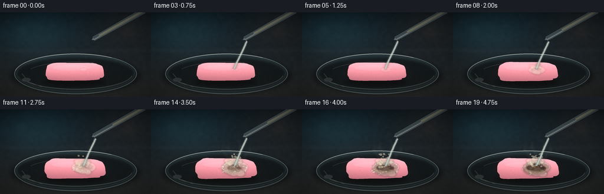
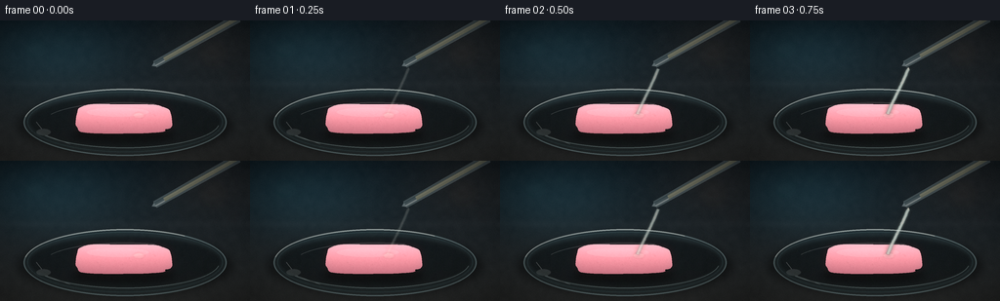
展开代码变化
--- 上一保存版本
+++ 本次保存版本
@@ -211,15 +211,15 @@
d = ImageDraw.Draw(layer)
# A lumpy, rising reaction mass.
- for j in range(26):
+ for j in range(20):
a = rng.uniform(0, 2 * math.pi)
rr = rng.uniform(0.15, 1.0)
x = 141.0 + math.cos(a) * (3.0 + 19.0 * foam) * rr
y = 100.0 + math.sin(a) * (2.0 + 9.0 * foam) * rr
rad = rng.uniform(2.8, 8.2) * (0.35 + 0.65 * foam)
- tone = mix_color((241, 230, 202), (104, 88, 67), 0.30 * char)
+ tone = mix_color((241, 230, 202), (104, 88, 67), 0.46 * char)
d.ellipse((s(x - rad), s(y - rad * 0.68), s(x + rad), s(y + rad * 0.72)),
- fill=(*tone, int(40 + 92 * foam)))
+ fill=(*tone, int(30 + 68 * foam)))
layer = layer.filter(ImageFilter.GaussianBlur(s(1.25)))
canvas = composite(canvas, layer)
@@ -227,7 +227,7 @@
# Bubbles are seeded once and emerge over time, so they do not flicker.
bubble_layer = soft_layer()
d = ImageDraw.Draw(bubble_layer)
- for j in range(76):
+ for j in range(56):
birth = 0.15 + 0.72 * rng.random()
if p < birth:
continue
@@ -242,7 +242,7 @@
radius = base_r * grow * (0.55 + 0.45 * pop)
if radius < 0.12:
continue
- tone = (244, 237, 215, 170) if rng.random() > 0.22 else (190, 169, 137, 150)
+ tone = (244, 237, 215, 145) if rng.random() > 0.22 else (190, 169, 137, 130)
d.ellipse((s(x - radius), s(y - radius * 0.78), s(x + radius), s(y + radius * 0.78)),
fill=(*tone[:3], int(tone[3] * foam)))
if radius > 0.75:
@@ -273,16 +273,16 @@
core = soft_layer()
d = ImageDraw.Draw(core)
- for _ in range(25):
+ for _ in range(34):
a = rng.uniform(0, 2 * math.pi)
rr = math.sqrt(rng.uniform(0.0, 1.0))
- x = 141.0 + math.cos(a) * (3.0 + 10.5 * char) * rr
- y = 99.5 + math.sin(a) * (1.5 + 4.4 * char) * rr
- rw = rng.uniform(2.0, 5.2) * (0.35 + 0.65 * char)
+ x = 141.0 + math.cos(a) * (3.5 + 11.5 * char) * rr
+ y = 99.5 + math.sin(a) * (1.7 + 4.8 * char) * rr
+ rw = rng.uniform(2.2, 5.7) * (0.35 + 0.65 * char)
rh = rw * rng.uniform(0.45, 0.78)
- tone = mix_color((72, 42, 22), (12, 12, 11), rng.uniform(0.30, 1.0) * char)
+ tone = mix_color((62, 35, 19), (7, 8, 8), rng.uniform(0.45, 1.0) * char)
d.ellipse((s(x - rw), s(y - rh), s(x + rw), s(y + rh)),
- fill=(*tone, int(rng.uniform(100, 175) * char)))
+ fill=(*tone, int(rng.uniform(145, 225) * char)))
core = core.filter(ImageFilter.GaussianBlur(s(0.65)))
canvas = composite(canvas, core)
@@ -303,33 +303,33 @@
rng = np.random.default_rng(313)
cloud = soft_layer()
d = ImageDraw.Draw(cloud)
- for j in range(24):
+ for j in range(17):
a = rng.uniform(0, 2 * math.pi)
rr = math.sqrt(rng.uniform(0.0, 1.0))
x = 141.0 + math.cos(a) * (3.5 + 10.0 * reaction) * rr
y = 97.0 - reaction * 7.5 + math.sin(a) * (2.0 + 5.0 * reaction) * rr
radius = rng.uniform(2.0, 5.7) * (0.45 + 0.55 * reaction)
d.ellipse((s(x - radius), s(y - radius * 0.65), s(x + radius), s(y + radius * 0.72)),
- fill=(236, 224, 195, int(45 + 72 * reaction)))
+ fill=(236, 224, 195, int(28 + 48 * reaction)))
cloud = cloud.filter(ImageFilter.GaussianBlur(s(1.25)))
canvas = composite(canvas, cloud)
bubble = soft_layer()
d = ImageDraw.Draw(bubble)
- for j in range(42):
+ for j in range(28):
birth = 0.22 + 0.70 * rng.random()
if p < birth:
continue
life = min(1.0, (p - birth) * 3.6)
- x = 141.0 + rng.uniform(-10.0, 10.0) * reaction
- y = 99.0 - life * rng.uniform(5.0, 24.0) * reaction
+ x = 141.0 + rng.uniform(-15.0, 15.0) * reaction
+ y = 99.0 - life * rng.uniform(6.0, 27.0) * reaction
r = rng.uniform(0.6, 2.4) * (0.45 + 0.55 * reaction)
d.ellipse((s(x - r), s(y - r * 0.85), s(x + r), s(y + r * 0.85)),
- fill=(235, 226, 201, int(115 * reaction)),
- outline=(255, 246, 216, int(150 * reaction)), width=max(1, s(0.20)))
+ fill=(235, 226, 201, int(80 * reaction)),
+ outline=(255, 246, 216, int(105 * reaction)), width=max(1, s(0.18)))
d.ellipse((s(x - r * 0.55), s(y - r * 0.60),
s(x - r * 0.12), s(y - r * 0.22)),
- fill=(255, 255, 235, int(145 * reaction)))
+ fill=(255, 255, 235, int(110 * reaction)))
bubble = bubble.filter(ImageFilter.GaussianBlur(s(0.22)))
return composite(canvas, bubble)
候选 10播放与检查图
点击播放 · 原生 RGB 像素

展开代码变化
代码未变化；重新保存了产物。
可观测工具轨迹
实际执行的命令与返回图片。
命令 1exit 0
/bin/bash -c "pwd && rg --files -g 'prompt.txt' -g 'GENERATION_RULES.md' -g 'task_spec.json' -g '"'!**/.git/**'"'"
命令 2exit 0
/bin/bash -c 'ls -la'
命令 3exit 0
/bin/bash -c 'cat prompt.txt'
命令 4exit 0
/bin/bash -c 'cat GENERATION_RULES.md'
命令 5exit 0
/bin/bash -c 'cat task_spec.json'
命令 6exit 0
/bin/bash -c "sed -n '1,240p' artifact_io.py"
命令 7exit 0
/bin/bash -c 'python generate.py'
命令 8exit 0
/bin/bash -c 'python generate.py'
命令 9exit 0
/bin/bash -c 'python generate.py'
命令 10exit 0
/bin/bash -c 'python generate.py'
命令 11exit 0
/bin/bash -c 'python generate.py'
命令 12exit 0
/bin/bash -c "python - <<'PY'
from PIL import Image
import numpy as np
for i in [0,1,2,10,19]:
a=np.array(Image.open(f'frames/{i:02d}.png'))
print(i, a.mean(axis=(0,1)), a[95:110,110:150].mean(axis=(0,1)), a.max())
PY"命令 13exit 0
/bin/bash -c 'python generate.py'
命令 14exit 0
/bin/bash -c 'python generate.py'
命令 15exit 0
/bin/bash -c "python - <<'PY'
from pathlib import Path
import numpy as np
from PIL import Image
p=Path('.')
frames=np.stack([np.array(Image.open(p/f'frames/{i:02d}.png')) for i in range(20)])
print('shape', frames.shape, 'dtype', frames.dtype)
print('frame means', [round(float(x),1) for x in frames.mean((1,2,3))])
print('adjacent MAD', [round(float(np.abs(frames[i].astype(int)-frames[i-1]).mean()),2) for i in range(1,20)])
z=np.load('pixels.npz')['pixels']
print('pixels.npz', z.shape, z.dtype, 'frames', len(list((p/'frames').glob('*.png'))))
print('index.html bytes', (p/'index.html').stat().st_size, 'inspection', Image.open('inspection.png').size)
PY"视觉工具实际返回图片 1
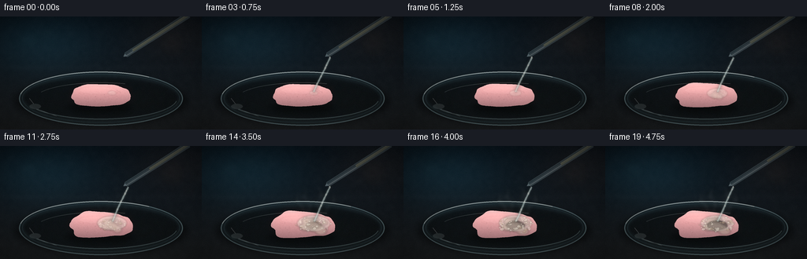
视觉工具实际返回图片 2

视觉工具实际返回图片 3

视觉工具实际返回图片 4

视觉工具实际返回图片 5

视觉工具实际返回图片 6

视觉工具实际返回图片 7
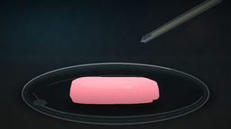
视觉工具实际返回图片 8
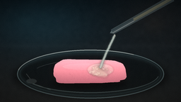
视觉工具实际返回图片 9
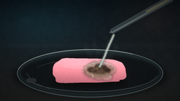
视觉工具实际返回图片 10

视觉工具实际返回图片 11
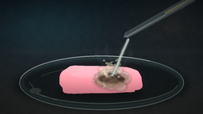
视觉工具实际返回图片 12
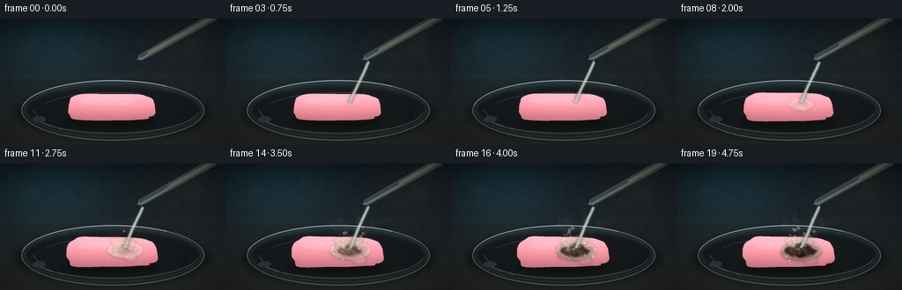
视觉工具实际返回图片 13
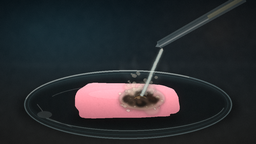
保存候选 10 份；完成命令 15 次；可验证图片返回 13 张。原始 API 响应与完整日志保留在本地。